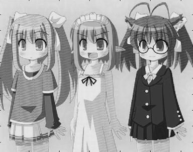

This is a project in Multimedia class taught by Prof. Dan Schonfeld. The goal of project is to understand YIQ presentation of color and the multimedia communication principle in great depth.
Fig.1 The image before transmit
Fig.2 R component of image
Fig.3 G component of image
Fig.4 B component of image
We can see that all the RGB components are similar; it means that each component contents same important information.
Fig.5 Y component of image
Fig.6 I component of image
Fig.7 Q component of image
The YIQ format is much different from RGB, the Y component bring most of the information
Fig.8 Time domain of Y I Q signal before
It shows that Y signal decrease to 3dB at frequency about 4.2 MHz
Fig.9 Frequency domain of Y I Q signal
Y: 0-4.2 MHz
I: 0-1.5 MHz
Q: 0-0.5 MHz
It shows that I,Q components are reduced much greater than I component
Fig.10 The spectrum of YIQ signal after filtering, we can see beyond the pass band, the energy is very low.
Apply QAM to I and Q signal and add Y signal to the result
Fig.11 The spectrum of composite signal
Fig.12 The composite image, we can see there are many high frequency component in the image, these high frequency component bring the information of I and Q component.
Fig.13 Y component of recovered image
Fig.14 I component of recovered image
Fig.15 Q component of recovered image
Fig.16 Recovered image